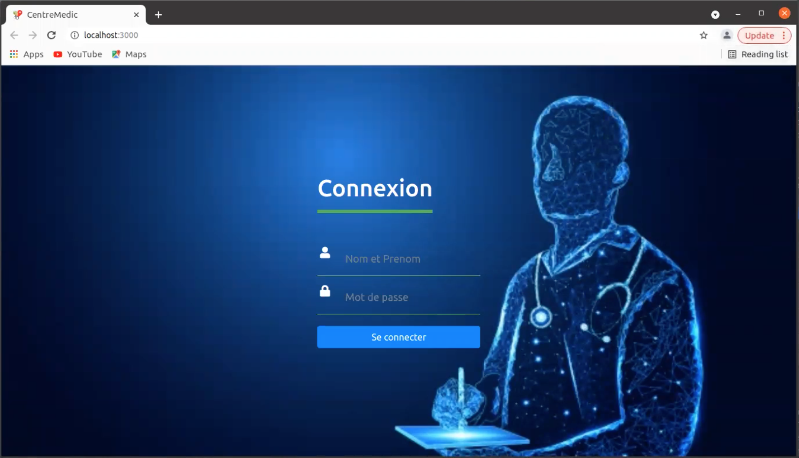
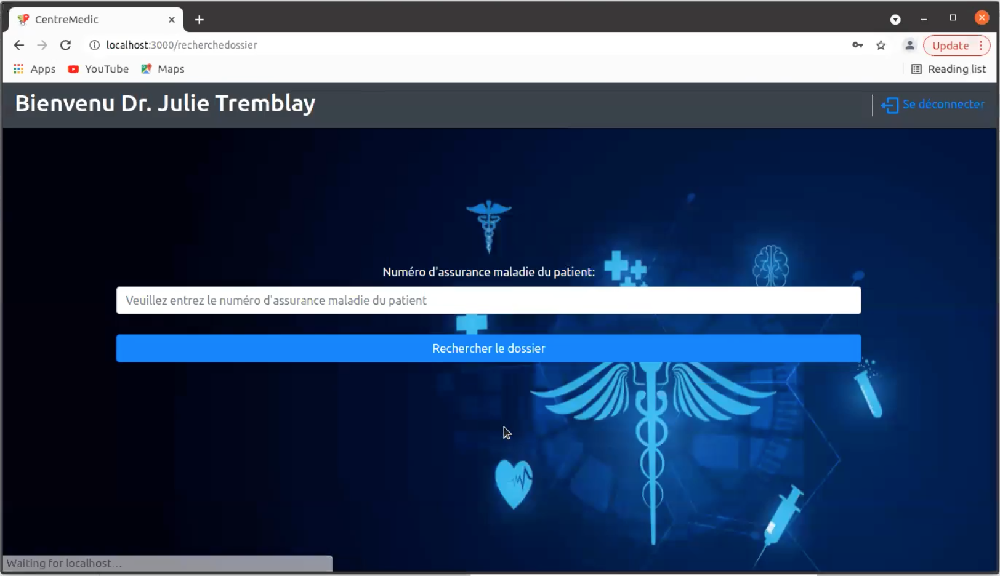
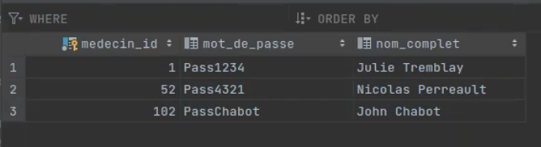
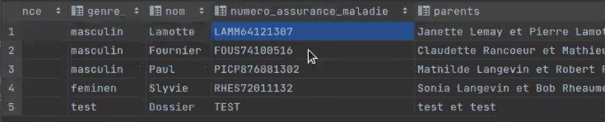
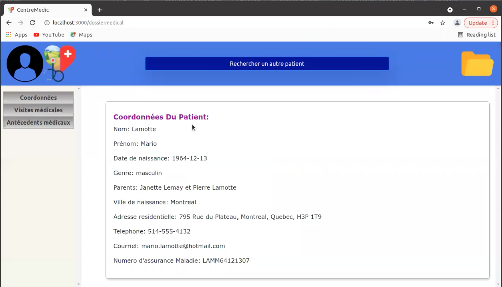
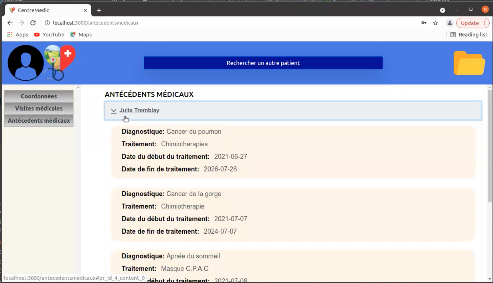
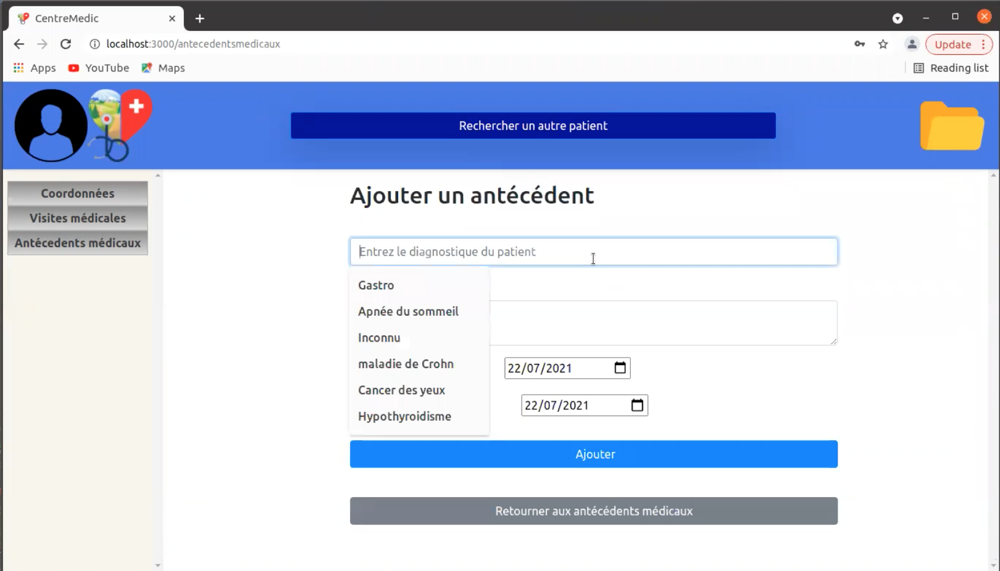
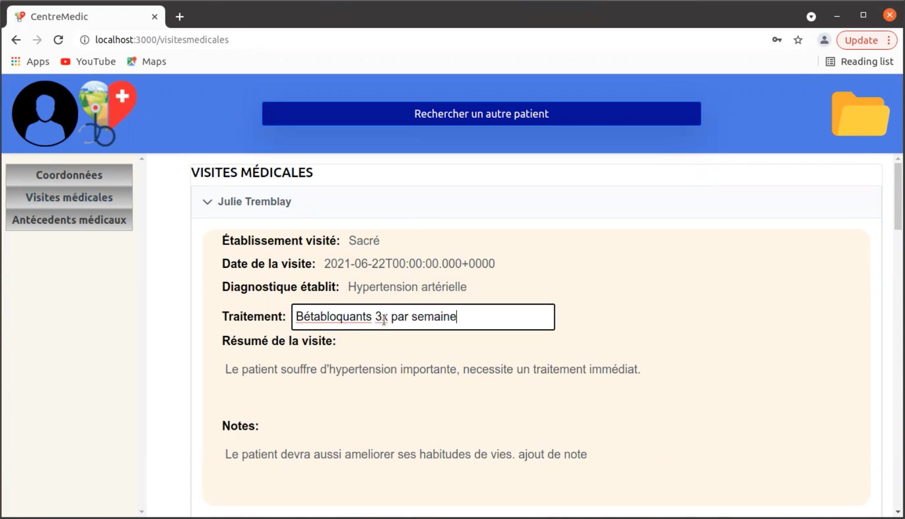

Détails du portefeuille
- Home
- Détails du portefeuille








Renseignements sur le Projet
- Catégorie: Développement Web
- Client: UQAM, Cours INF5153
- Date du projet: 17 Juin, 2021
- URL du projet: kousseylakadri/inf5153
Le Dossier médical centralisé est un logiciel permettant aux utilisateurs du système de santé québécois d'avoir un dossier médical centralisé, peu importe le médecin ou l'établissement qu'il fréquente.
Exigences détaillées
- Le patient ne peut rien modifier dans son dossier, sauf ses coordonnées
- Le dossier d'un patient est créé automatiquement pour toutes les personnes inscrites à la RAMQ
- Chaque modification faite par un médecin est automatiquement sauvegardée au dossier, sans que le médecin n'ait explicitement à sauvegarder les modifications
- Un médecin peut, en tout temps, annuler les modifications qu'il a apporté à un dossier
- Plusieurs médecins peuvent apporter des modifications à un même dossier en même temps sans conflit de concurrence
- Chaque modification faite au dossier doit être archivée. En tout temps, la RAMQ peut reconstruire un dossier complet, tel qu'il était à cette époque, à partir d'une modification précise faite dans le passé. La RAMQ peut également reconstruire un dossier à une date donnée
- La carte d'assurance-maladie du patient deviendra la façon d'accéder au dossier du patient. La carte sera munie d'une puce électronique qui émettra un code lorsque présentée devant l'ordinateur d'un médecin. Avec ce code, le dossier du patient pourra être téléchargé afin d'être consulté par le médecin.
- La carte d'assurance-maladie peut aussi être présentée à un professionnel de la santé (non médecin) pour un accès en lecture seule du dossier